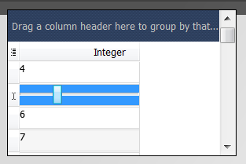
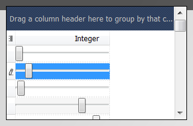

QtitanDataGrid cell editor
Overview
QtitanDataGrid provides an interface of the cell editor. If you realize it you get full access to the content management and behavior of the cell. You can control events from the mouse and keyboard, the fact of the start and the end editing of the cell content and etc. The cell editor is binded to the grid column and relevant for all cells in this column.
Standard cell's editors
Using the cell editor interface, in the grid, implemented 13 the standard editors of cells that you can use at its discretion. Each editor designed to edit a particular type of value. There are editors for edit pictures, dates, times, string fields, text blobs, enums, tabulated values and flags. To set the the standard editor for the grid column, there is a method Qtitan::GridTableColumn::setEditorType(). The method allows to specify concrete editor or to specify mode - automatic determination of type editor by the value which being edited. Value to determine type of editor is taken from the first row of the Qt model which the grid is connected to.
Example of use:
Qtitan::GridTableColumn* column = (Qtitan::GridTableColumn *)view->getColumnByModelColumnName("Photo"); column->setEditorType(Qtitan::PictureEditorType);
Creating a custom editor
To create a cell editor for editing an arbitrary value, it should be implemented 2 virtual abstract classes (interface). The first class is the editor of the cell - Qtitan::GridEditor. The second class is a repository of cell's editors - Qtitan::GridEditorRepository, which essentially is a factory of the Qtitan::GridEditor instances. After Qtitan::GridEditorRepository is implemented, it must be installed to the grid column for which cells implements an editor. After connecting, the repository will start creating instances of classes Qtitan::GridEditor for specific grid cell. For each cell will be created one editor regardless of whether the cell is in a state of editing or not. Editors will create as long as the cells visible on the screen at the moment. If the model has 1000 rows but at the moment grid shows 10 rows only then the grid will create 10 editors in the one column.
Grid cell editor can be in two states - preview mode and edit mode. When the editor has been created it is in the preview mode. In the preview mode to the editor transferred the value received from the Qt model (using Qt::DisplayRole role). Value is passed to the editor using the method - Qtitan::GridEditor::updateContext(). The editor should save the value and use it to displaying or rendering until Qtitan::GridEditor::updateContext() will not be called next time. Followed by Qtitan::GridEditor::updateContext(), grid will try to get the editor's widget (QWidget) which will be embeded into the grid cell. For these purposes the method - QWidget* Qtitan::GridEditor::getCellWidget() is invoked. The owner of a widget is the editor of the cell. For one editor requires to create only one widget for preview. If the method Qtitan::GridEditor::getCellWidget() returns NULL then the method Qtitan::GridEditor::paintEvent() will be used to render the cell in preview mode.
To start editing a cell the grid carries the editor to the edit state mode. For this purpose the grid will invoke the method setEditMode(true). Following this method will be called method Qtitan::GridEditor::updateContext(), which will be given a value for editing. The value for editing is obtained from the model using Qt::EditRole role. After calling this method, the grid is trying to get a widget (QWidget) that will used to edit a cell. For this purpose will cause the function - Qtitan::GridEditor::getCellWidget(). The returned widget should be initialized edited value that was obtained earlier. The widget can not be the same (and should not the same) with the widget that was returned in preview mode. If the widget () returns NULL, the method Qtitan::GridEditor::paintEvent() will be used to render the edited value (like in preview mode). To obtain the actual edited value from the editor grid uses the getContextValue() function. Editor must itself make sure that the value which is edited in the widget has been synchronized with the value returned by the function::getContextValue(). Finally, this value will be placed into the Qt model with the Qt::EditRole role. To finish edit the value the grid invokes the method setEditMode(false). After that it is assumed that the editor is once again get back to preview mode.
Widgets, which are returned by Qtitan::GridEditor::getCellWidget() fucntion for edit mode or preview mode, can be of any complexity. For example you can return the widget which is a successor of the QGraphicsScene. The mechanism of embedding these widgets into the grid based on using of the flag Qt::WA_DontShowOnScreen. Embedded widget is lives in the background (like virtual environment), and the grid translates to it all mouse, keyboard, activation events from the cell and synchronizes the focus. The QWidget::render() is used to rendering the widget onto the cell area. As a resul, such widget will become an integral part of the grid.
If the function Qtitan::GridEditor::getCellWidget() returns NULL, the method Qtitan::GridEditor::paintEvent() will be used for rendering the grid cell. As parameters for this method passed QPainter and Qtitan::GridEditorStyleOption which contains a setting for the font, color and etc. The style settings formed on the basis of a common grid settings.
Example of the custom editor
Let to demonstrate in practice how looks a simple QtitanDataGrid editor, which is in edit mode uses QSlider widget for editing integer values:
#include <QtitanGrid.h> class GridSliderEditor: public Qtitan::GridEditor { Q_OBJECT public: GridSliderEditor() : m_repository(Q_NULL), m_site(Q_NULL), m_editMode(false), m_slider(Q_NULL), m_modified(false) { } virtual void initEditor(Qtitan::GridEditorRepository* rep, Qtitan::GridEditorSite* site) { m_repository = rep; m_site = site; } virtual GridEditorRepository* editorRepository() const { return m_repository; } virtual GridEditorSite* site() const { return m_site; } virtual bool isEditMode() { return m_editMode; } virtual void setEditMode(bool mode) { m_editMode = mode; if (m_editMode) { m_slider = new QSlider(m_site->parent()); m_slider->setOrientation(Qt::Horizontal); if (m_site->parent() == Q_NULL) m_slider->setAttribute(Qt::WA_DontShowOnScreen); connect(m_slider, SIGNAL(valueChanged(int)), this, SLOT(valueChanged(int))); repositoryUpdated(); } else { delete m_slider; m_slider = Q_NULL; } } virtual QVariant getContextValue() { return m_value; } virtual void updateContext(const QVariant& value, bool modified = false) { if (m_editMode) m_slider->setValue(value.toInt()); m_value = value; m_modified = modified; } virtual bool isContextModified() { return m_modified; } virtual QWidget* getCellWidget() { return m_editMode ? m_slider : Q_NULL; } virtual void repositoryUpdated() { //Apply repository's settings to the QSider. if (m_slider != Q_NULL) { if (m_slider->testAttribute(Qt::WA_NoSystemBackground) != m_repository->transparentBackground()) m_slider->setAttribute(Qt::WA_NoSystemBackground, m_repository->transparentBackground()); if (m_slider->isEnabled() != m_repository->isEnabled()) m_slider->setEnabled(m_repository->isEnabled()); } } //editor's events virtual void paintEvent(QPainter& painter, const GridEditorStyleOption& option) { painter.drawText(option.rect, m_value.toString()); } virtual void mouseMoveEvent(const QPoint& pos) { Q_UNUSED(pos); } virtual void mousePressEvent(const QPoint& pos) { Q_UNUSED(pos); } virtual void mouseReleaseEvent(const QPoint& pos) { Q_UNUSED(pos); } virtual void mouseDblClickEvent(const QPoint& pos) { Q_UNUSED(pos); } virtual void mouseOverEvent(const QPoint& pos) { Q_UNUSED(pos); } virtual void mouseOutEvent() { } private: Qtitan::GridEditorRepository* m_repository; Qtitan::GridEditorSite* m_site; bool m_editMode; QSlider* m_slider; bool m_modified; QVariant m_value; private slots: void valueChanged(int value) { m_modified = true; m_value = value; } }; class GridSliderEditorRepository: public Qtitan::GridEditorRepository { public: GridSliderEditorRepository() : Qtitan::GridEditorRepository() { setDefaultValue(0); } virtual GridEditor* createEditor() { return new GridSliderEditor(); } }; ................. Qtitan::GridTableColumn* column = (Qtitan::GridTableColumn *)view->getColumnByCaption("Count"); column->setEditorType(Qtitan::CustomEditType); column->setEditorRepository(new GridSliderEditorRepository());
Once the sample is compiled and running you will see the following picture:

Notice that the slider only appear if you turn on the editor to the editing state. To do this, move the focus to the cell and click on it or press Enter key. If necessary to have the cell has always been in a edit state while cell has focus, you must change the policy of the editor activation. For this purpose please use this function - GridEditorRepository::setEditorActivationPolicy() with GridEditorActivationPolicyFlag.
Qtitan::GridTableColumn* column = (Qtitan::GridTableColumn *)view->getColumnByCaption("Count"); column->editorRepository()->setEditorActivationPolicy(Qtitan::Always);
If you need to have the edit state was enabled, even if the cell has no focus, use this method - Qtitan::GridEditorRepository::setAlwaysShowEditor().
Qtitan::GridTableColumn* column = (Qtitan::GridTableColumn *)view->getColumnByCaption("Count"); column->editorRepository()->setAlwaysShowEditor(true);

In this example, all the cells is in edit mode, but when a cell gets focus grid will not go to the editing state (the function GridTableView::isEditing() will return false). So the grid has always been a in the editing state until the cell has the focus is needed to set a policy of activation - Qtitan::GridEditorRepository::setEditorActivationPolicy(). Here's how:
Qtitan::GridTableColumn* column = (Qtitan::GridTableColumn *)view->getColumnByCaption("Count"); column->editorRepository()->setAlwaysShowEditor(true); column->editorRepository()->setEditorActivationPolicy(Qtitan::Always);

Use of the delegates from the regular Qt table - QTableView
In the QtitanDataGrid is implemented a special cell editor that allows you to use already written a delegate from QTableView without losses. It enters in the list of predefined editors and may be enabled. To do this, set the corresponding class column property to the Qtitan::DelegateAdapterEditorType. Any special manipulation with QTableView-delegates for the proper operation is not required. The regular delegates interface is fully supported by QtitanDataGrid.
Example of use:
Qtitan::GridTableColumn* column = (Qtitan::GridTableColumn *)view->getColumnByModelColumnName("Rating"); column->setEditorType(Qtitan::DelegateAdapterEditorType); GridDelegateAdapterEditorRepository* adapter = static_cast<GridDelegateAdapterEditorRepository *>(column->editorRepository()); adapter->setDelegate(new StarDelegate);
In this example, the class StarDelegate is a QTableView delegate from the demo examples of Qt.